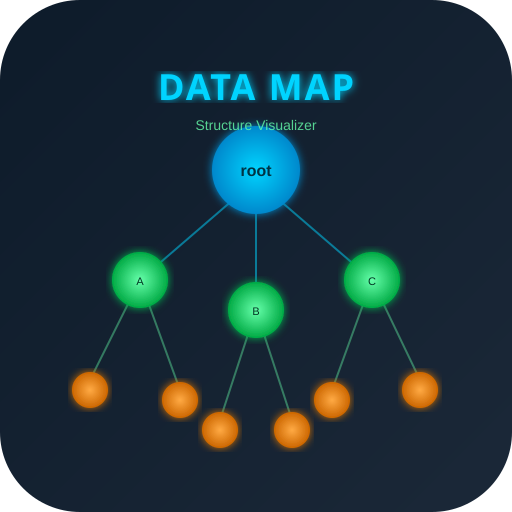
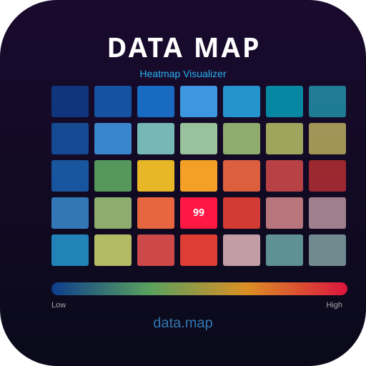
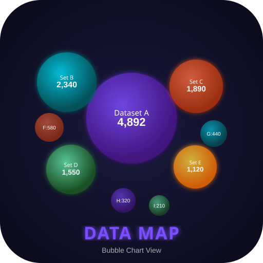
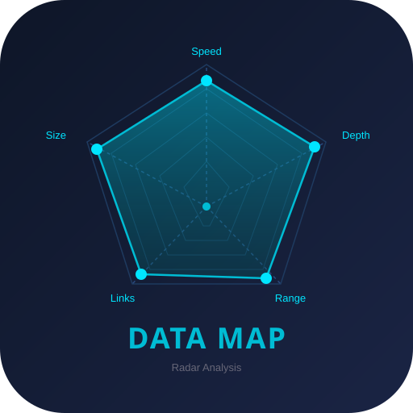
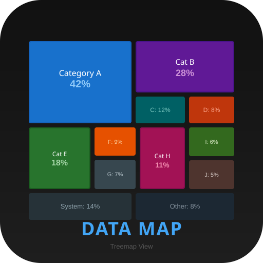
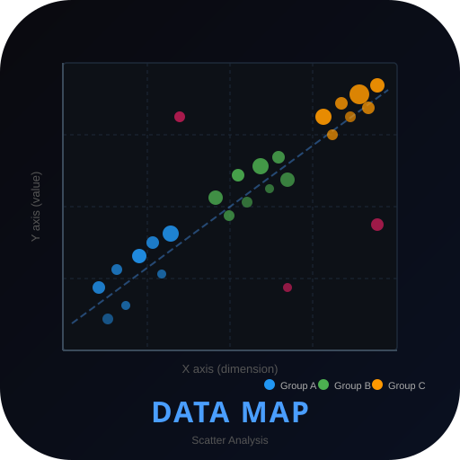
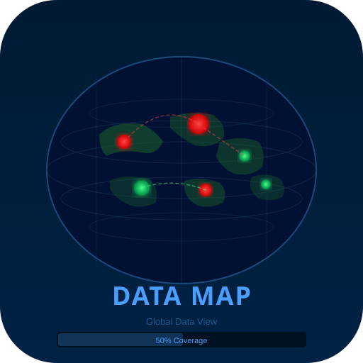
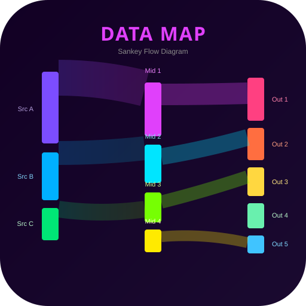

candidate_01_network_nodes
candidate_02_heatmap candidate_03_flow_chart
candidate_03_flow_chart
candidate_04_bubble_map
candidate_05_radar_chart
candidate_06_treemap
candidate_07_scatter_plot
candidate_08_world_map
candidate_09_sankeycandidate_10_minimal_graph